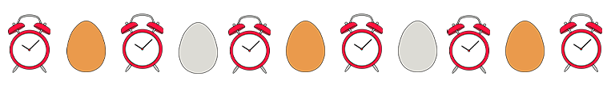
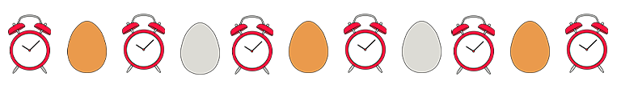

Quanto deve cuocere un uovo? Dipende da te!
Seleziona una cottura e avvia il timer per ottenere l'uovo perfetto, senza stress.
↓
 


Hai un uovo ma zero idee?
Scopri ricette semplici e gustose per trasformarlo in un piatto irresistibile, in pochi minuti.
Qualche idea di ricetta
Uovo fritto su riso e avocado
Ingredienti: riso cotto, uovo, avocado, olio, sale, peperoncino (opzionale).
Procedimento: Friggi l’uovo con tuorlo morbido. Servilo sopra una ciotola di riso caldo con fette di avocado. Aggiungi un pizzico di sale e peperoncino.
Uova strapazzate con spinaci
Ingredienti: uova, spinaci freschi, olio, sale, pepe.
Procedimento: Cuoci gli spinaci con un filo d’olio. A parte sbatti le uova, salale e versale nella padella. Strapazza il tutto finché sono cotte.
Insalata di tonno e uovo sodo
Ingredienti: uova sode, tonno in scatola, pomodorini, rucola, olive nere, olio, sale.
Procedimento: Sbuccia le uova e tagliale a spicchi. In una ciotola unisci rucola, pomodorini, tonno sgocciolato e olive. Aggiungi le uova, condisci con olio e sale.
Toast con uovo fritto e pancetta
Ingredienti: pane in cassetta, uovo, pancetta, burro.
Procedimento: Tosta il pane con un velo di burro. Friggi l’uovo e cuoci la pancetta a parte. Componi il toast: pane, pancetta croccante, uovo sopra.
Uovo alla coque con bastoncini di pane
Ingredienti: uova, pane tipo baguette, burro.
Procedimento: Cuoci le uova alla coque. Tosta bastoncini di pane imburrato. Apri la parte alta dell’uovo e intingi i bastoncini nel tuorlo morbido.
Panino con uovo sodo e maionese
Ingredienti: panino morbido, uova sode, maionese, lattuga, senape.
Procedimento: Taglia le uova a fettine. Spalma maionese e senape sul pane, aggiungi lattuga e le fette di uovo. Chiudi e gusta.
Uova strapazzate al formaggio
Ingredienti: uova, parmigiano o altro formaggio grattugiato, burro, sale.
Procedimento: Sbatti le uova con un pizzico di sale e formaggio. In una padella, sciogli il burro e versa le uova. Mescola dolcemente finché cremose.
Uovo alla coque e asparagi
Ingredienti: uova, asparagi, olio, sale.
Procedimento: Cuoci le uova alla coque. Salta gli asparagi in padella con olio e sale. Servi insieme, intingendo gli asparagi nel tuorlo cremoso.